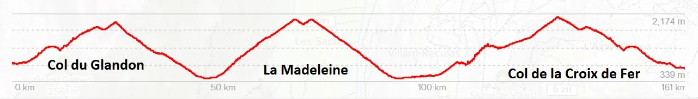
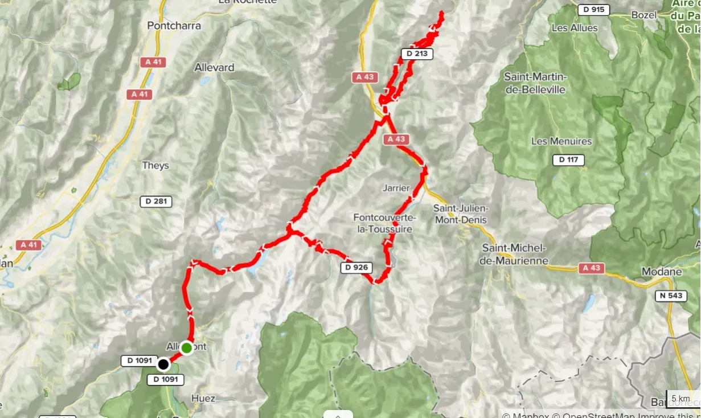
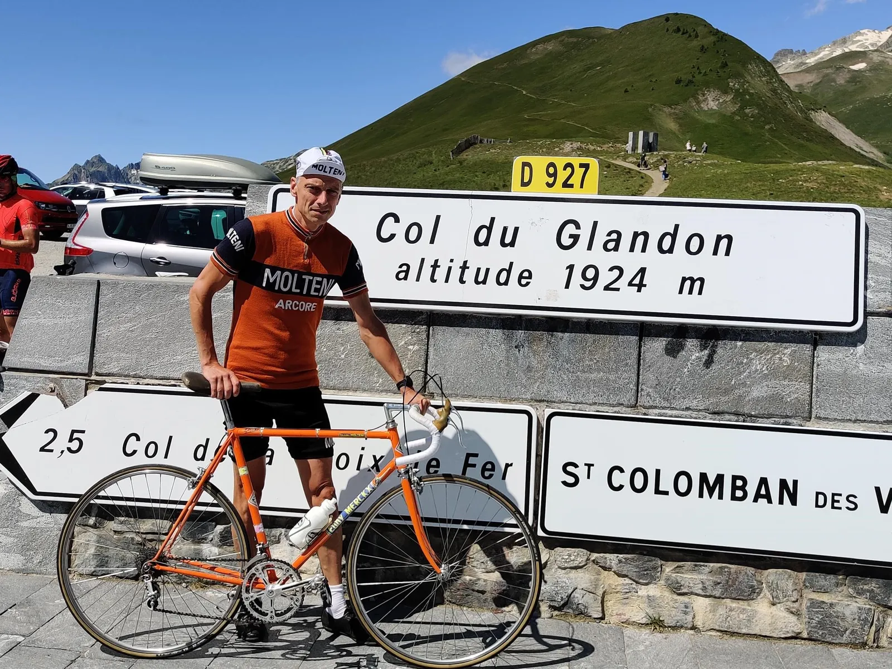
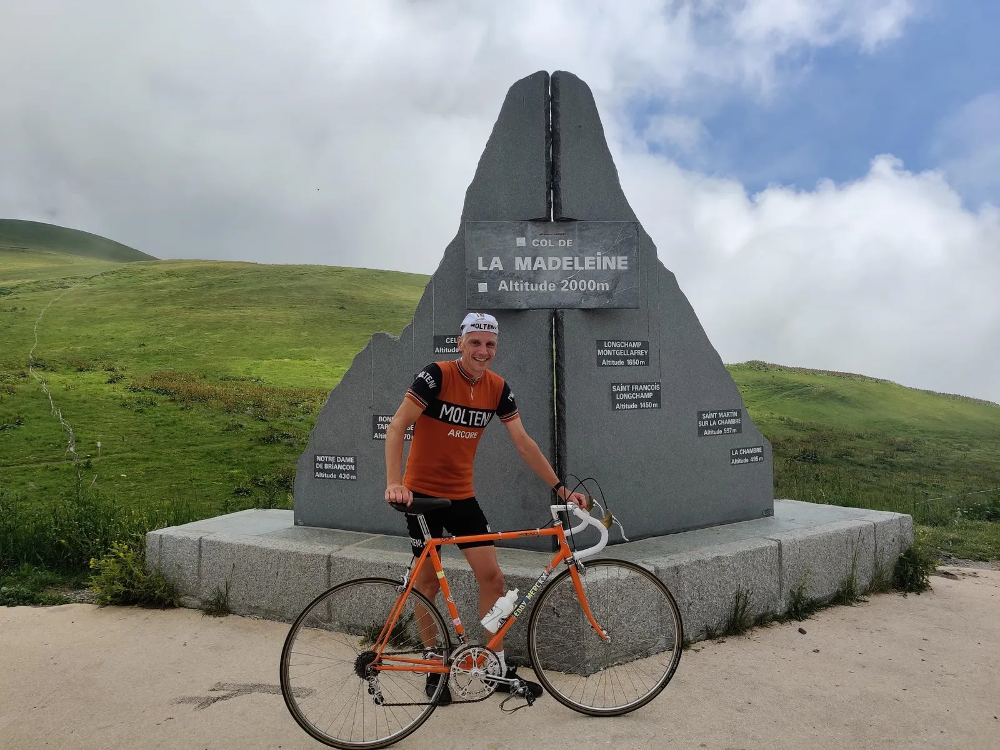
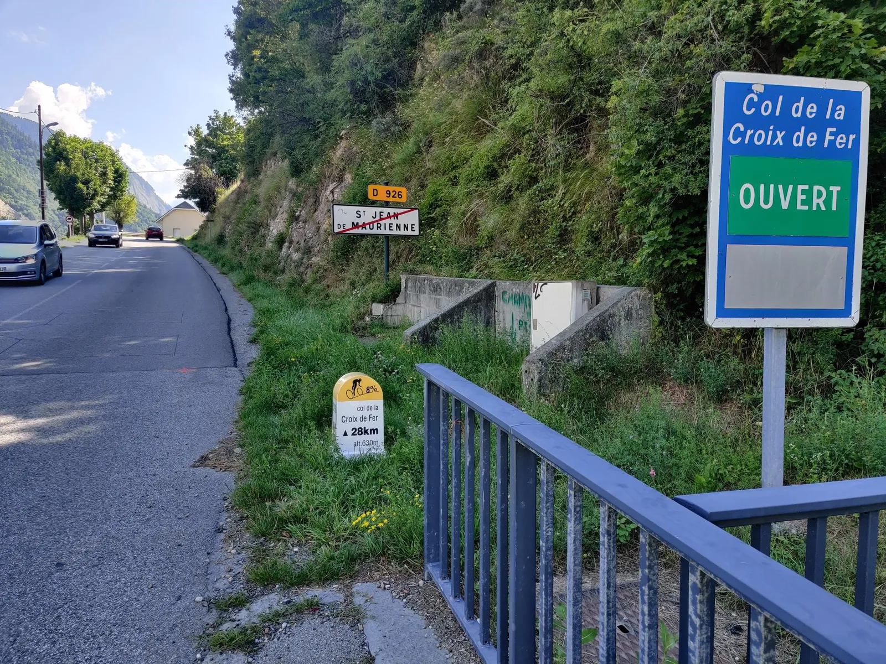
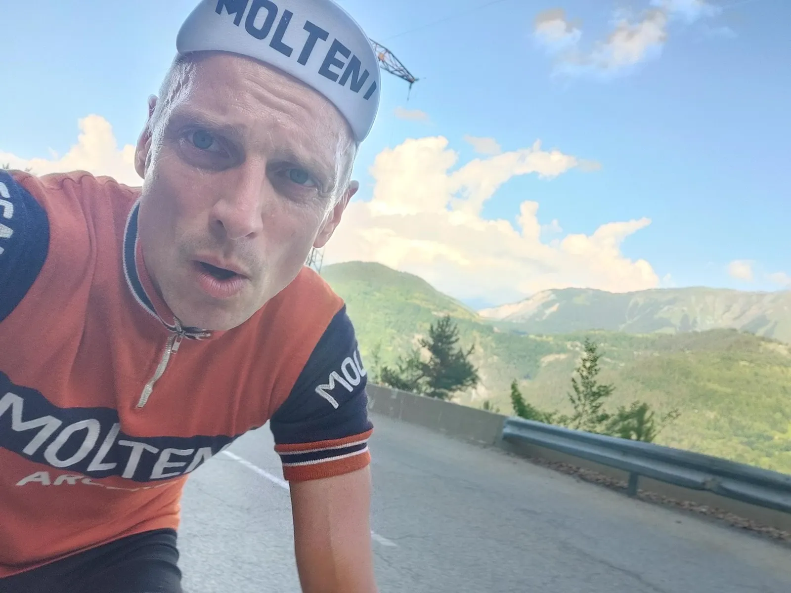
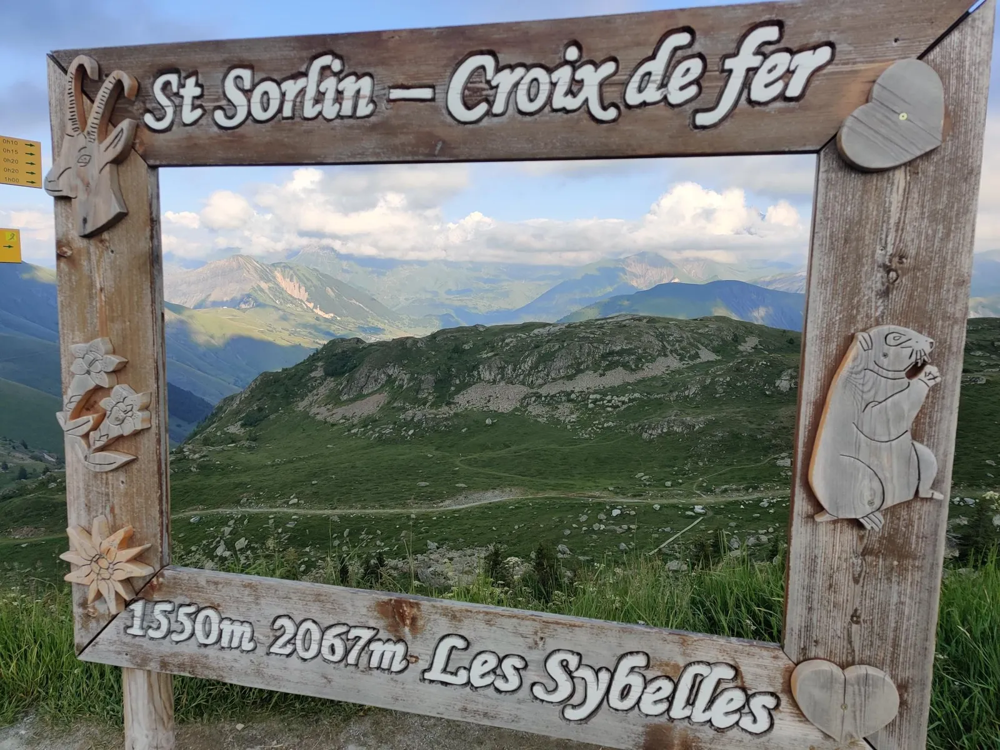

19.etape: Den store Alpefinale – Molteni løber med podiet!

Disclaimer: På grund af dårligt vejr over det sydvestlige Tyskland, der har medført skader på telegrafmasterne, kommer reportagen fra 19. og afsluttende etape af Tour de Danmark med lettere forsinkelse. Vi beklager I har måtte vente…
Efter en 1600 km lang udmarvende transfer til de franske alper, var tiden kommet til 19.etape – årets sidste i Tour de Danmark. Kristian Blume vinder episk alpeetape – og sikre sig dermed den samlede sejr foran Kaptajn Bjørnsteen og Jeppe Thiemer.
Efter hårde forhandlinger havde ASO accepteret, at kun den sidste etape skulle afvikles i Frankrig og altså ikke hele tre, som først krævet.
Vi fik vores vilje, udtaler Sportsdirektør Klaus Kjærsgaard. Én etape – men til gengæld blev den helt latteligt hård. 161 km og over 5.500 højdemeter.

Hård rute i vente
Alene ruteplanlægningen tyndede godt ud i feltet. Således valgte flere af de deltagende retrohold at blive hjemme i Danmark og bruge både de to hviledage og søndagen på at pudse cykler og se Tour de France i flimmeren.
Vi gider sgu ikke køre så langt, udtaler en anonym Peugeot-rytter. Hverken materiellet eller mine knæ kan holde til det. Det er sgu’da kun Moltenidrengene, det er åndssvage nok til sige ja til dén slags. Idiots de saucisses arriérés mentaux – svovlede han videre.

Kaptajn Bjørnsteen var derimod godt tilfreds.
Vi har hele tiden haft Eigil Leegaard og Kristian Blume på holdkortet til Alpe-etaperne. Kristians coronapause var kritisk, men han er heldigvis blevet klar igen. Og med færre konkurrenter til start, har vi sendt Eigil på ferie. Jeg kan nok holde styr på feltet, når vi sender Kristian afsted på sidste bjerg.
Allez, allez!

Resterne af feltet startede kl. 11.00 fra Rochetaillée og gled samlet op mod Col du Glandon. Varmen og stigningsprocenterne holdt angrebslysten nede og nedkørslen til La Chambre bød heller ikke på udbrud. Opstigningen til La Madeleine bød derimod på mandefald. En håndfuld ryttere vendte simpelthen om efter de første 50 højdemeter. Det er alt, alt for hårdt for vores OL-forberedelser, snøftede en Brooklyn-rytter. Jeg kan ikke nå at restituere til tv-transmissionerne, hvis jeg kører længere i dag.

Nedkørslen fra Madeleine afløstes af et kort transportstykke til Saint-Jean-de-Maurienne og så ventede 28 km op til Croix de Fer. Helt som aftalt, blev Kristian Blume skudt af med 10 km til toppen.

Den var den ondenlyneme led, dén stigning, fortalte Kristian efter løbet. Benene var gode på Madeleine, men jeg vidste sgu ikke om jeg kunne komme over Croix de Fer. Heldigvis fik jeg lige nevet mig over på en håndfuld vingummi og en pølse inden jeg gik kold. Og så var det jo bare at holde fingrene fra bremserne på vej ned i dalen.


Forza Molteni!
På stregen i Allemond havde Kristian en god margin til forfølgergruppen, hvor Kaptajn Bjørnsteen tog sig af 2.pladsen.
Sportsdirektør Klaus Kjærsgaard havde armene helt oppe i den tynde luft – det er stærkt arbejde af drengene i dag. Nu får de sgu lov at køre med i bilen hjem i stedet for at rulle af tilbage til Danmark.
19. Etape:
1. Kristian Blume, Squadra Molteni
2. Kaptajn Bjørnsteen, Squadra Molteni
Klassement:
1. Kristian Blume, Squadra Molteni
2. Niels Bjørnsteen, Squadra Molteni
3. Jeppe Thiemer, Squadra Molteni
4. Max ”Maxteni” Nielsen, Squadra Molteni
5. Lars Munch, Squadra Molteni
6. Grane Maaløe, Squadra Molteni
7. Jens StærkBojesen, Squadra Molteni
8. Carsten Jacobsen, Squadra Molteni
9. Svend Seegert, Squadra Molteni
10. Jens Langergaard, Squadra Molteni
11. Eigil Leegaard, Squadra Molteni
12. Per Sandahl, Squadra Molteni
13. Løjtnant Sørensen, Squadra Molteni
Hold:
1. Squadra Molteni
2. Team Willier-Triestina
3. Team Peugeot Re-Cycled
4. Team K-Werk
5. G.S. Velopress
6. TI-Raleigh
Hviledags-Klassement:
1. Jesper Victor, Team Karma Cowboy
DNS-Klassement:
1. Thomas Marker, Team Brooklyn